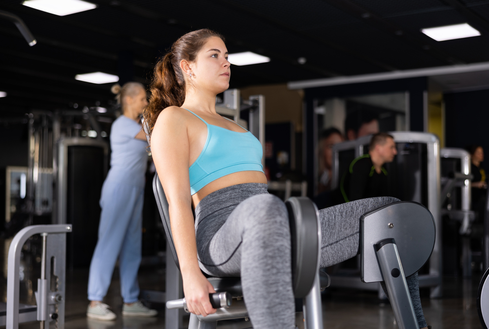
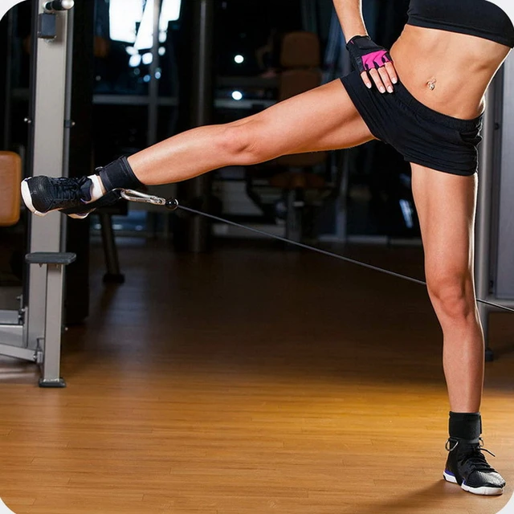

Los Abductores es un grupo muscular que comprende varios músculos que trabajan en conjunto para realizar la abducción de la cadera, que es el movimiento de separar la pierna del cuerpo hacia afuera, hacia los lados. Es un músculo que al desarrollarse aporta mucho a la estética de las piernas al dar más anchura en la vista frontal. Muchos hombres no entrenan este músculo por separado, ya que se estimula bastante haciendo sentadillas profundas, lo cuál considero un error debido a que este estimulo no es suficiente si tu objetivo es un cuerpo grande y estético.
Este es el mejor ejercicio de todos para desarrollar los músculos abductores de las piernas. Superior a su versión en polea debido a que la máquina permite un movimiento guiado que permite enfocar más la fuerza sin gastar recursos en estabilidad y equilibrio. Las abducciones en máquina es un ejercicio que tienes que hacer sin falta, si quieres unas piernas grandes y estéticas. Recuerda realizar las 2 variantes, abducción y aducción, para estimular adecuadamente el grupo muscular.
Este ejercicio es una muy buena alternativa si no dispones de una máquina para abductores en tu gimnasio. La técnica para realizar el ejercicio puede resultar algo complicada, pero este ejercicio presenta beneficios adicionales al tratarse de un movimiento libre. Si quieres trabajar los abductores pero no te gusta la máquina para abductores o no tienes esta máquina en tu gimnasio, haz este ejercicio sin dudar.
